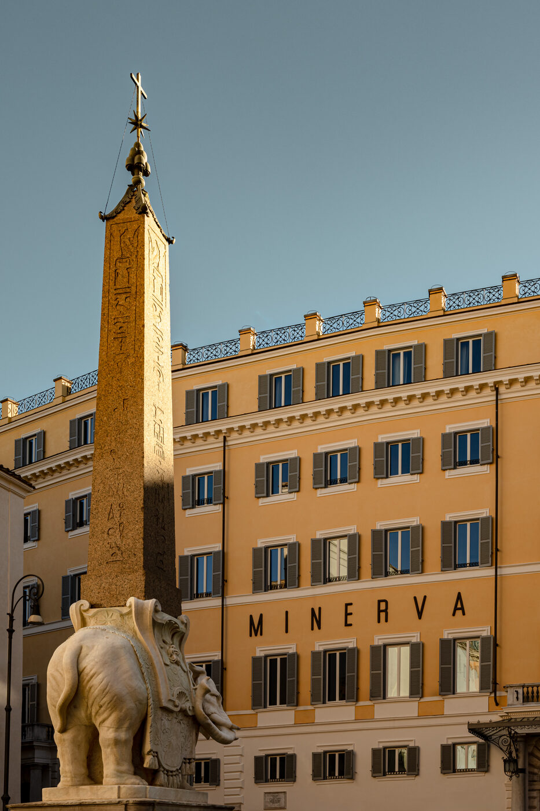

On the last day of March, a fifteenth-century palazzo on the Rio di Noale quietly opened its doors for the first time in decades — not as a museum, not as a private residence, but as a hotel that belongs as much to Venice as the water it sits beside. Orient Express Venezia, at Palazzo Donà Giovannelli, is the kind of arrival that changes the texture of an entire neighbourhood.
Venice has never lacked for luxury hotels. The Cipriani, the Gritti, the Danieli — these are names that have become synonymous with the city itself, institutions as embedded in the Venetian imagination as the Basilica or the Rialto. But Orient Express Venezia does something different. Rather than occupying the well-trodden territory of San Marco or the Giudecca, it has chosen Cannaregio — the quieter, residential sestiere where laundry still hangs between buildings and the morning light falls on canals that tourists rarely find. The palazzo sits between the Ca’ d’Oro and the Chiesa della Madonna dell’Orto, in a part of the city that rewards those who know where to look.
The building itself dates to 1436, commissioned by the Donà family, one of Venice’s oldest noble dynasties. Over the centuries it passed through various hands, served various purposes, accumulated the kind of layered history that only Italian buildings seem to carry — Gothic bones overlaid with Renaissance ambition, Baroque flourishes softened by centuries of acqua alta. By the time LVMH and Accor’s Orient Express brand acquired the property, the palazzo required not merely renovation but resurrection.
Eight years of listening to the walls
That resurrection was entrusted to Aline Asmar d’Amman, the Lebanese-French architect whose practice, Culture in Architecture, has become the house architect of choice for projects that demand sensitivity to history without sacrificing contemporary confidence. The restoration took eight years — a duration that speaks to the complexity of working within a building where every wall has something to say. Asmar d’Amman’s approach was not to impose a vision upon the palazzo but to excavate one from within it, peeling back later additions to reveal original frescoes, restoring structural elements that had been concealed for generations, and introducing new materials only where they could enter into dialogue with what already existed.
The result is a hotel of forty-seven rooms, suites and residences — the largest spanning some 1,560 square feet — that feels less like an interior design project and more like a work of architectural archaeology. Six Signature Suites occupy the piano nobile, where nineteenth-century frescoes depicting the goddess Minerva preside over gilded salons and marble fireplaces that have been burning since the Risorgimento. The ceilings alone would justify the journey: hand-painted, polychromatic, alive with a richness of colour that digital reproduction cannot capture.
We did not restore the palazzo to what it once was. We restored it to what it always wanted to become — a living thing, not a monument.
Aline Asmar d’Amman, ArchitectThroughout the hotel, the material palette reads as a love letter to Venetian craft. Sculptured wood panelling lines corridors where velvet upholstery in deep burgundy and forest green absorbs the light from bespoke Murano glass chandeliers — each one commissioned specifically for its location, each one subtly different. Restored murals coexist with walls clad in natural stone and embossed leather. Moiré silks dress windows that look onto the canal or the garden, their surfaces catching the particular quality of Venetian light that painters have been chasing since Bellini. It is maximalism with restraint — every surface considered, nothing merely decorative.
At the table: Beck, cicchetti and Art Deco
The dining programme confirms Orient Express Venezia’s ambition to be a destination rather than merely a place to sleep. Heinz Beck Venezia brings the three-Michelin-starred German-Italian chef to the lagoon, his first Venetian outpost and a significant statement of culinary intent. Beck’s cooking — precise, ingredient-led, rooted in Mediterranean tradition but restless in its curiosity — finds a natural home in a city where the relationship between kitchen and market has always been intimate.
La Casati, the all-day restaurant named for the legendary Marchesa Luisa Casati who once scandalised Venice by walking cheetahs through Piazza San Marco, offers a more relaxed register — seasonal Venetian cooking served in a room where the frescoes provide all the decoration the space could need. And then there is the Wagon Bar, which channels the Art Deco glamour of the original Orient Express carriages into a cocktail bar serving Venetian cicchetti alongside drinks mixed with the kind of theatrical precision that the brand demands. The banquettes are upholstered in midnight-blue velvet. The brass fixtures catch candlelight. It is a room designed for the hour between aperitivo and dinner, when Venice is at its most generous.

A restored salon at Palazzo Donà Giovannelli — Photography courtesy of Wallpaper*
The hidden garden and the Gothic gate
Perhaps the hotel’s most unexpected pleasure is its garden — a secret courtyard enclosed by antique wrought-iron gates, illuminated by Venetian lanterns, planted with species that thrive in the lagoon’s particular microclimate. In a city where private gardens are among the rarest of luxuries, this one feels like a discovery, a space where the sound of the city recedes and the only movement is the play of light through the canopy. The garden connects to the palazzo’s Gothic water gate, a structure of pointed arches and weathered stone that once served as the building’s primary entrance — a reminder that in Venice, the front door has always faced the water.
The spa draws on Roman thermal rituals — a progression of hot, warm and cold bathing rooms designed to slow the body down, to move guests from the velocity of arrival into something closer to the city’s own tempo. The treatment rooms are lined in natural stone, lit by candles, deliberately analogue in an age of digital wellness. It is the kind of spa that understands that the most luxurious thing a hotel can offer is not a treatment menu but permission to do nothing.
A brand in full expansion
Orient Express Venezia does not exist in isolation. It is the centrepiece of LVMH and Accor’s ambitious revival of the Orient Express brand, a programme that also includes La Minerva in Rome — occupying a former convent near the Pantheon — and La Dolce Vita, a luxury sleeper train that will trace routes through the Italian countryside. The brand’s strategy is clear: to build a collection of properties that share a design language and an emotional register without becoming interchangeable. Each hotel is rooted in its city, shaped by its building, responsive to its context.
The Venezia property has already received recognition, winning the Wallpaper* Design Awards 2026 prize for Best Reinvention — a category that acknowledges not just aesthetic achievement but the intelligence required to transform a historic building without betraying its character. It is an award that feels deserved. Asmar d’Amman has not created a hotel that references Venice; she has created one that belongs to Venice, that could not exist anywhere else, that draws its identity from the specific qualities of its location, its light, its stone, its relationship with the water.
Standing in the courtyard at dusk, watching the lanterns come alive one by one, listening to the distant sound of a vaporetto on the Grand Canal, you understand what Orient Express Venezia is really offering. Not a room. Not a view. Not even a restoration, however exceptional. It is offering a version of Venice that the city itself has been trying to remember — one where beauty is not a performance but a condition, where luxury is not loudness but presence, where a palazzo built in 1436 can still, after all these centuries, feel like it has only just begun.